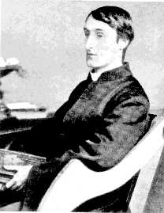

Tuesday, December the 7th, 2004
back to: title, date or indexes
It was a sweltering day. I was strolling along the lane that runs from Pointy Town to Coctlosh when I chanced upon a Jesuit priest sitting on a bench. I tipped my hat and greeted him.
“Hello,” I said, “What a sweltering day it is.”
“Felix Randal the farrier o is he dead then?” said the priest, and I realised that I was talking to Gerard Manley Hopkins.
“Father Hopkins!” I cried, perhaps a tad overenthusiastically, for he frowned at me and said: “My duty all ended, who have watched his mould of man, big-boned and hardy-handsome, pining—”
“Would you like a bite of my medlar?” I interrupted, and as I did so a dapple-dawn-drawn falcon flew past, narrowly missing my head.
“Pining,” continued Hopkins, without taking a blind bit of notice of my fruit-sharing initiative, “till time when reason rambled in it and some fatal four disorders, fleshed there, all contended?”
Swallowing a chunk of medlar, I wondered about these four disorders.
“Impetigo, ague, the bloody flux and Blotzmann's syndrome?” I asked.
Father Hopkins was now fretting with his rosary beads.
“Sickness broke him,” he said. I was beginning to wonder why the priest was chuntering on about a dead farrier, but I decided to sit down on the bench. He didn't flinch. He kept talking, but I was no longer listening. I had become transfixed by the sight of a flock of weird unholy birds circling above us. They were black and purple and huge, with savage talons and a wingspan of monstrous proportions. Could they be the legendary Birds of Bog I had read about in my little primer when I was an infant at Sunday School?
Suddenly Father Hopkins tapped me on the shoulder.
“How far from then forethought of,” he was shouting, “all thy more boisterous years, when thou at the random grim forge, powerful amidst peers, didst fettle for the great grey drayhorse his bright and battering sandal!”
The last few words were yelled so loudly that my hat nearly fell off my head. But it seemed as if the priest had finished jabbering at last. I felt a sudden urge to kiss his hand, as if he were a bishop, but I decided not to. Instead, I thrust my last medlar at him.
“Take it, take it, Father Hopkins,” I said, and I got up and walked away. All in all, it was quite an interesting morning.

Father Hopkins, S.J.
Hooting Yard on the Air, December the 15th, 2004 : “The Swiss Family Robinson” (starts around 05:30)